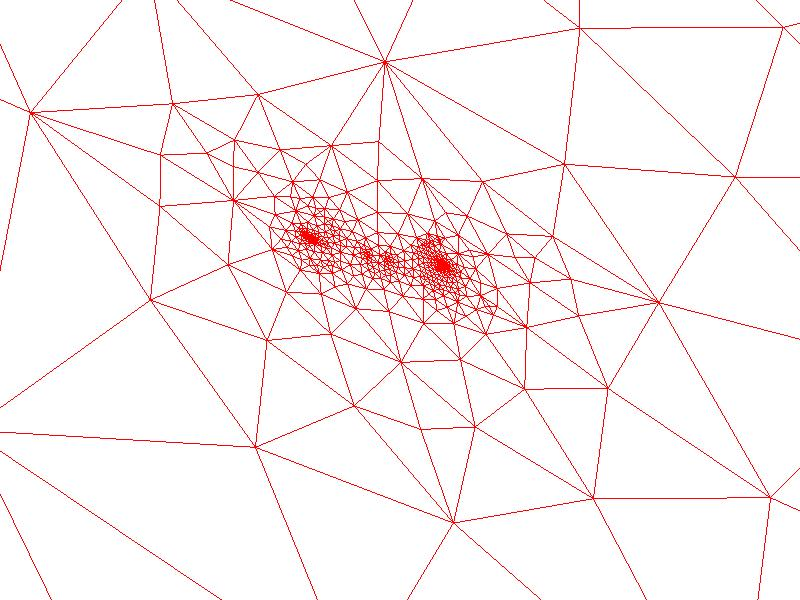
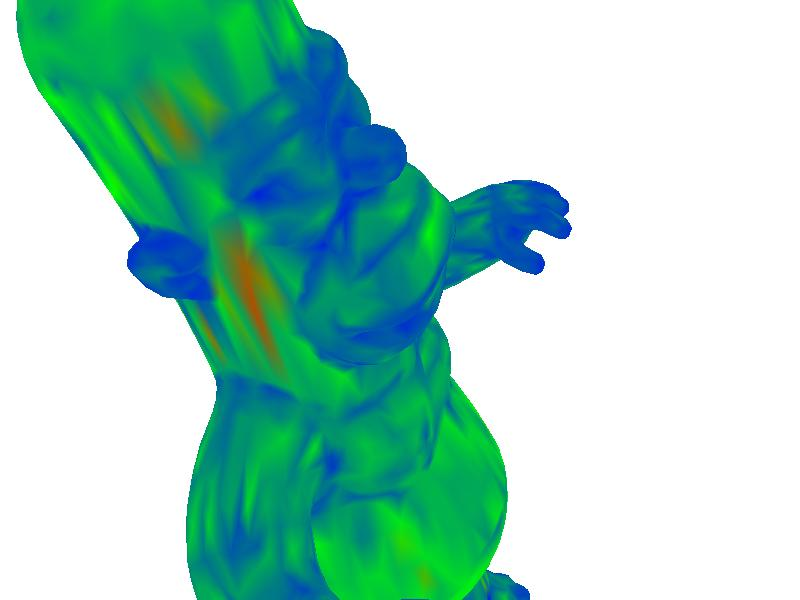
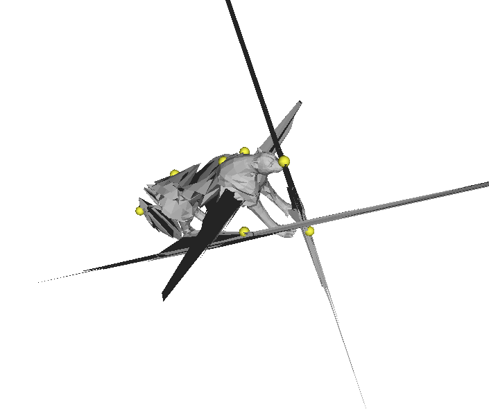
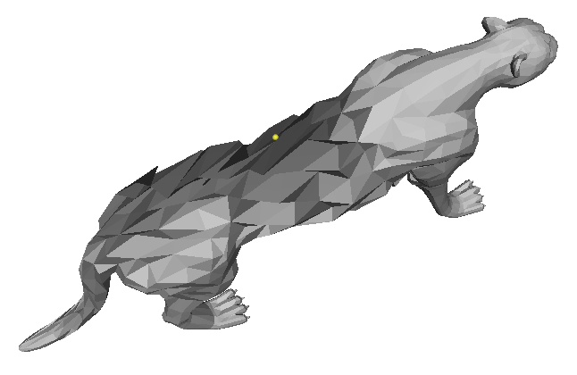

Laplacian Mesh Editing
NOTE: For those interested in this tutorial, you may find this assignment I designed for my class Digital 3D Geometry to be of interest
- Introduction / Basic Laplacian Mesh Representation
- Mesh Reconstruction
- Mesh Deformation
- 2D Parameterization
- Membrane Surface
- Surface Function Interpolation
- Discrete Mean Curvature Approximation
- Spectral Eigenanalysis
- Debugging with Matlab
- Program Usage
- Download Executable (Windows 7 64 bit only)
- Crazy Bloopers
Introduction / Basic Laplacian Mesh Representation
Triangular meshes have become the ubiquitous surface representation in recent years in computer graphics, so a lot of research has been put into manipulating them in an efficient, meaningful way. Unfortunately, it's sometimes difficult to do operations on meshes that store geometry in absolute coordinates. For instance, for meshes that store the absolute position of vertices along with the topology of the mesh, doing holistic deformations that preserve overall shape is not easy operating on a point-by-point basis, nor is doing spectral analysis of the mesh.
Laplacian meshes store the geometry of triangle meshes in an alternative way by keeping track of differential vertex information instead of absolute information. This turns out to be a much better way to preserve the relationship between vertices when certain transformations (especially deformations) are done on the mesh. It also allows for a very natural way to do smooth function interpolation across the surface, and it allows approximation of a lot of metrics from differential geometry, such as mean curvature, with very little effort. And finally, Laplacian Meshes give rise to a transformation that can be viewed as a spectral decomposition over surfaces similar to the Discrete Fourier Transform.
In this assignment, I will implement the Laplacian Mesh framework and show all of the applications I mentioned above. I will be working primarily from Olka Sorkine's STAR 2005 report on the topic:
Laplacian Mesh Processing
Olga Sorkine
STAR report, EUROGRAPHICS 2005.
The main idea behind this is to construct and manipulate a delta coordinates for each mesh. A delta coordinate for vertex i is defined as follows:

where N(i) represents the set of all neighbor vertices of the ith vertex, and wij represents the weight put on the jth neighbor of i. If the weights are all 1, then this formula reduces to taking the difference between the vertex and the average of its neighbors:
where di is the the "valence" (the number of neighbors) of the vertex i. This scheme of choosing equal weights of all neighbors is known as the umbrealla weighting scheme.
Another common weighting scheme involes the use of "cotangent weights" between the angles in this figure:
Referring to this picture, the weights chosen are related to the cotangents of the angles. opposite the edge formed between the vertex i and its neighbor j by the following equation:

This weighting scheme is more geometrically-motivated, and I will describe the trade-offs between the cotangent weights and umbrella weights in the various applications in this assignment (I have implemented both).
Since a delta coordinate is a linear combination of a vertex and its neighbors, the process of constructing delta coordinates for all vertices can be represented as a matrix, called the Laplacian Matrix (I will refer to it as L from now on), whose entries are as follows:
- If i and j are neighbors, the ijth entry is equal to the negative normalzied weight wij (wij divided by the sum of all weights from i)
- If i and j are not neighbors and i is not equal to j, then the 0 if i and j are not neighbor, then the ijth entry is zero
- If i = j, then place a 1 at the ijth entry
One thing to note about this matrix L is that it is extremely sparse. In typical meshes, the valence of each vertex is around 6. So this means that in a mesh of N vertices, only 6 + 1 (for the vertex itself) entries of a given row are nonzero. Therefore, it would be wise to use a sparse matrix package so that these nonzero entries are given more priority in matrix computation. I chose to use the C library csparse to do all of my matrix manipluations in this project. This is a C library (constisting of two files, csparse.c and csparse.h) which has different calling conventions from C++, so it needs to have the "extern"{ #include
Unfortunately, this simple csparse library doesn't have functions for eigenanalysis, so I actually used an ordinary linear sover called TNT (the Template Numeric Toolkit) to find the eigenvalues and eigenvectors. This is much, much slower than everything else and I'm sure it could be sped up with a better sparse library that finds eigenvectors, but I just wanted to get some basic results for this extra feature.
Mesh Reconstruction
One thing to notice right away about the Laplacian Matrix L is that it is of rank (NVertices - 1). This is because it stores differential coordinates, which throw away all information about absolute position. As such, the translational offset from the origin has been lost. Given one additional independent constraint, this matrix will have rank NVertices and will be invertible. One way to do this is to specify the location of exactly one vertex, which is enough to fix the position of the mesh in space. To do this, simply add one row to the bottom of the L matrix that has a 1 at the index of this vertex and zeros everywhere else, and set the corresponding "delta coordinate" of this row to be the absolute position of that vertex:
This constraint is called an anchor. In this case, the matrix is invertible and there is exactly one solution. It is a sanity check on the implementation to reconstruct a mesh this way. Here's one example below of a command that does this:
| lap -batch -input_mesh ..\input\cheetah.off -output_mesh ..\output\cheetahtranslated.off -anchor 0 0 0 0> |
Mesh Deformation
Things get a little bit more interesting when more than one anchor (contraint) is set. That is, the mesh can be perfectly reconstructed when the absolute position of exactly one coordinate is set, but the reconstruction problem turns into an overconstrained linear system as soon as multiple constraints are added. Unless the positions of the anchors are obtained by the same affine transformation from their original positions, then they will either be stretched or compressed out of position with respect to each other. This means that the reconstruction will somehow have to interpolate between the multiple constraints. Luckily, this problem of a "best fit" system to satisfy the constraints is well-posed as a linear system, because we can just solve the system in the least squares sense and see what happens.
To summarize, mesh deformation goes as follows:
- Select multiple "anchor" points and add them as rows to the bottom of the L matrix
- Solve the resulting linear system in the least squares sense
- Update the positions of all vertices based on the obtained solution
- Restore the anchors to the positions that were selected before (since it's solving the linear system in the least squares sense, the anchors themselves are subject to change. In my implementation I chose to restore them to their original positions).
Here are some results of performing deformations like this:
Example 1:
| ||||
| lap ..\input\cheetah.off -anchor 542 1.02685 3.40965 11.0388 -anchor 1744 1e-005 2.78567 5.17036 -anchor 1216 1.27713 2.43501 1.4888 -anchor 1218 1.54832 2.60662 -1.13023 -anchor 93 0.122623 -8.33685 -0.078234 -anchor 1400 -1.68136 -7.81739 6.99476 |
Example 2:
| ||||
| lap ..\input\homer.off -anchor 2441 0.00497882 0.453124 0.029167 -anchor 585 -0.00464966 0.252848 0.107087 -anchor 1312 -0.00312858 0.0823189 0.0729158 -anchor 746 -0.070543 -0.459437 0.0922957 -anchor 629 0.0797675 -0.460417 0.098516 -anchor 41 0.239192 0.368883 0.191258 -anchor 26 -0.23585 0.366796 0.183122 | ||||
| NOTE: I had to fix anchor points on the feet, stomach, and head so that none of those regions would compress too much (otherwise his neck gets shortened or his legs get lengthened, etc. during interpolation) |
Example 3:
| ||||
| lap ..\input\bird.off -anchor 372 -0.045667 -0.180281 0.739645 -anchor 144 0.0421702 0.335753 0.0768707 -anchor 118 0.00747901 0.202826 -0.423408 -anchor 41 -0.0842556 -0.00475397 -0.919195 -anchor 285 0.957645 0.144144 0.110768 -anchor 527 -1.25056 -0.0853518 -0.158718 |
Example 4:
| ||||
| lap ..\input\homer.off -anchor 4970 0.00783304 0.430231 -0.130552 -anchor 4481 0.0627483 0.0891501 -0.0849756 -anchor 4116 -0.128583 0.0506952 -0.0678414 -anchor 3446 0.236774 0.0419351 -0.030368 -anchor 4422 0.108557 -0.456222 -0.0866849 -anchor 4536 -0.057996 -0.451578 -0.0892058 -anchor 2437 0.0409466 0.410966 0.0308054 -anchor 771 0.0335028 -0.00432647 0.0923488 -anchor 1879 0.11876 -0.445469 0.0351217 -anchor 1886 -0.0614699 -0.427459 0.0472889 -anchor 5046 0.0678885 -0.12167 -0.284095 -anchor 4978 -0.109826 -0.12293 -0.258844 |
Example 5:
| ||||
| lap ..\input\dragon.off -anchor 281 0.225491 0.784088 1.41387 -anchor 1113 0.639721 0.0547617 1.0153 -anchor 1149 -0.237336 0.155541 1.08933 -anchor 982 -0.372984 -0.780189 0.655208 -anchor 869 0.70507 -0.7625 0.547044 -anchor 762 0.660558 1.85185 0.237422 -anchor 793 -0.65282 1.727 0.404826 -anchor 470 0.72197 0.577027 -0.486846 -anchor 648 -0.172797 0.48738 -0.732294 |
Notice how with this method it is possible to get very good results choosing only several anchor points. For instance, it was possible for me to get the entire leg of the cheetah to move forward by only moving one point on the toe to an anchor point. These results are amazing considering that this works for arbitrary manifold triangular meshes, and that no wireframe or skeleton had to be specified in order for this to work. This is all made possible by the differential representation, which allows for correct interpolation of details between anchor points.
One more thing I want to point out is that this application of Laplacian Mesh Editing is particularly well-suited for cotangent weights. Take the following example below deforming the cheetah's tail:
| ||||
| lap ..\input\bird.off -anchor 283 0.704451 -0.0149947 -0.372178 -anchor 593 -0.705112 0.0478067 -0.0420212 -anchor 375 -0.00933032 -0.46185 0.844485 |
| ||||
| lap ..\input\cheetah.off -anchor 739 0.00754 3.40547 14.3869 -anchor 538 9e-005 3.53012 8.42054 -anchor 1809 0.0455269 2.67826 1.17087 -anchor 287 -0.487473 1.02373 -15.5152 -anchor 307 -0.442271 2.0773 -5.25777 |
| ||||
| lap ..\input\bird.off -anchor 283 0.704451 -0.0149947 -0.372178 -anchor 593 -0.705112 0.0478067 -0.0420212 -anchor 375 -0.00933032 -0.46185 0.844485 |

Since the cotangent weights are are a representation based on angles, they preserve angles (and, consequently, area) much better during reconstruction. The result is that the surface tends to interpolate more "correctly" and in a more visually appealing way, and in a way that actually appears smoother. This is especially apparent with homer's arms and the cheetah's tail.
2D Parameterization
2D parametrization of 2D surfaces embedded in 3D space is an important problem in computer graphics. Applications of parameterization include texture mapping, finding surface correspondences, etc. The Laplacian Mesh framework leads naturally to a 2D parametrization technique. The process is as follows:
- Choose a point on the mesh, v1, and pick one of its neighbors, v2
- Choose the point on the mesh that makes a counter-clockwise turn with v1 and v2 and call it v3.
- Choose the point on the mesh that makes a clockwise turn with v1 and v2 and call it v4.
- Remove the two faces inside of the quadrilateral (v4, v2, v3, v1)
- "Map" (v4, v2, v3, v1) to the points ( (0, 0, 0), (0, 1, 0), (1, 1, 0), (1, 0, 0) ). In other words, map the four chosen points that make a quadrilateral to the unit square in 2D, and "anchor" them at these positions (but it's not exactly anchoring)
- Now, instead of adding the four anchor points at the bottom of the L matrix, actually overwrite the rows in the matrix corresponding to the four points with what would have been the anchor rows. So what results is a square matrix, but with constraints within the square. I found that this gives better results than trying to add them as anchors, because everything seems to stay flat inside of the square much better this way
- Set all of the delta coordinates of the remaining vertices to zero. This makes it so that the points will try to be the exact average of their neighbors when the system is solved, which is important because we want the points to stay within the unit square (along a flat surface)
- After that matrix has been constructed and all of the delta coordinates have been set to zero, solve the system in the least squared sense. The anchor points will be fixed to the corners and the other points will be interpolated on the interior. The (x,y) coordinates of the vertices correspond to their 2D coordinates in this mapping
My program uses the first anchor specified as v1. If the user hits the 'p' key during interactive viewing, the mesh is parameterized from the selected point. If the user didn't select a point, it is parameterized starting from vertex "0". One more caveat is that I switch back to umbrella weights here, which are better suited for this application because they have only positive weights (cotangent weights can be negative for long, skinny triangles). Positive weights taking averages imply that points stay within the convex hull of the averaged points. Therefore, none of the points will leave the square or fold over each other with umbrella weights.
Here are some results of the parameterizations on various meshes I have (NOTE: I have removed the faces and rendered the edges so that the parameterizations are clearer):
| Choosing Point |
| Parameterization |
| Zooming in |
| Zooming in more around the head area |
In this example, mapped a square near the center of homer's torso to the outside of the unit square. Zooming in, it's clear how the points in densely sampled regions such as the head, hands, and feet had to be compressed in order to fit (in the second, zoomed-in image, the clusters of points corresponding to these anatomical regions are clearly visible). So there is a lot of distortion in these regions
Let me do a few more examples of this:
| Choosing Point |
| Parameterization |
| Zooming in |
Once again zooming in, the leg mappings are visible in two clusters on the left, and the back part of the abdomen is visible as a cluster in the center. In general, it appears that the distortion is much higher for points far away from the square that was cut out, which makes sense if you think about trying to compress the surface inside of the cut square
| Choosing Point |
| Parameterization |
| Zooming in |
|  |
The wings and the back of the bird near the tail all appear in clusters here
| Choosing Point |
| Parameterization |
| Zooming in |
This is one of the most interesting examples because it's of genus 1 (i.e. it has a handle). And out of all of the models encountered, it clearly has the most distortion towards the center for this reason.
Membrane Surface
Following a process similar to 2D parameterization, it is possible to get a surface that looks like what would happen if we tried to blow a soap bubble over fixed vertices. That is, fix a subset of the points as anchors and set the delta coordinates of the rest of the points to be zero. This forces the remaining points to interpolate in a way that minimizes the surface area between interpolated points.
In my interface, the user can select which points are going to be fixed in this approach as anchors. The user can then hit the 'm' key to find the membrane between these points. If no points are selected, the program will randomly select 100 of them to be anchors uniformly sampled across the surface. Here are a few examples of this:
| Object with fixed vertices | Membrane stretched across fixed vertices |
| lap -batch -input_mesh ..\input\cubehighres.off -output_mesh ..\output\cubemembrane.off -membrane -anchor 2 -0.5 0.5 0.5 -anchor 4 -0.5 0.5 -0.5 -anchor 3 0.5 0.5 0.5 -anchor 5 0.5 0.5 -0.5 -anchor 7 0.5 -0.5 -0.5 -anchor 6 -0.5 -0.5 -0.5 -anchor 1 0.5 -0.5 0.5 -anchor 0 -0.5 -0.5 0.5 |
This is the sort of soap surface you would get if you blew a bubble through a cube wireframe. Let me now do a few more examples, some of which will be with the meshes from before:
| Object with fixed vertices | Membrane stretched across fixed vertices |
| lap -batch -input_mesh ..\input\cubehighres.off -output_mesh ..\output\cubemembrane2.off -membrane -anchor 2 -0.5 0.5 0.5 -anchor 4 -0.5 0.5 -0.5 -anchor 3 0.5 0.5 0.5 -anchor 5 0.5 0.5 -0.5 -anchor 7 0.5 -0.5 -0.5 -anchor 6 -0.5 -0.5 -0.5 -anchor 1 0.5 -0.5 0.5 |
This is the same as the example before, except I left one of the eight corner vertices out. That leads to a neat interpolation that the right picture shows
| Picture of membrane surface | Picture of membrane surface with the fixed points highlighted |
| lap -batch -input_mesh ..\input\cheetah.off -output_mesh ..\output\cheetahmenbrane.off -membrane -output_function ..\output\cheetahMembraneFunc.txt |
In this example, the fixed anchor points were chosen randomly. Since the area between set points is being interpolated, the cheetah ends up looking malnourished.
| Picture of membrane surface | Picture of membrane surface with the fixed points highlighted |
 | |
| lap -batch -input_mesh ..\input\homer.off -output_mesh ..\output\homermembrane.off -membrane -output_function ..\output\homerMembraneFunc.txt |
Surface Function Interpolation
The Laplacian Mesh Framework also leads to a nice technique for interpolating function values smoothly between points where a function is not specified. The math behind this is exactly the same as the math behind the membrane surface and the parameterization. The rows of the laplacian matrix corresponding to known function values are overwritten with all zeroes and a 1 along the diagonal, and their "delta coordinates" are set to be equal to the known function values at those points. The rest of the points (whose function values are not specified) are set to have delta coordinates of zero with their rows in L kept in tact. The result is that the function evaluated at the points specified tries to be the average of the function values of its neighbors, and the least squared solution ends up interpolating smoothly between them. Here are a few examples of doing function interpolation:
| Specified function values | Interpolation results |
| lap ..\input\bird.off -input_function ..\input\birdFunc1.txt -noInterp -drawReds | lap ..\input\bird.off -input_function ..\input\birdFunc1.txt -drawReds |
In this example, I chose a high value of the function on one of the points on the tail, and even higher value of the function on one of the points on the beak, and very low values on both of the wings. As you can see, the value of the function ends up varying smoothly from high to low between the beak and the wings, and then back from low to high from the wings up to the tail.
Here are a couple of examples of doing this with the cheetah:
| lap ..\input\cheetah.off -input_function ..\input\cheetahFunc1.txt -drawReds | lap ..\input\cheetah.off -input_function ..\input\cheetahFunc2.txt -drawReds |
| In this example I set a high value of the function on one of the points on the forehead, a high value of the function on on point on each of the left legs, and a low value of the function on the front right leg. Interestingly, the least squared solution did not end up coloring the front right leg black as I expected, but this is completely valid since it still blends smoothly (no information was provided there, so blending to a high value is as just as good of an answer as blending to a low value | This is similar to the example on the left except I explicitly set values on the two back legs to be zero, and values on the two front legs to be 1 |
Discrete Mean Curvature Approximation
Taking the delta coordinates is an approximation of the mean curvature around a point times the normal direction at that point on a continuous surface. Therefore, taking the magnitude of the delta coordinates should give something proportional to curvature. Unfortunately, simply taking the magnitude of the delta coordinates and making that the "mean curvature" value at each vertex didn't work out so well for me in practice. Here's an example of what that looks like on the cheetah:
I was surprised to find that the curvature appeared to be higher around the shoulder area and certain areas of the back than it did around the face and toes (which definitely should have had very high curvature). So it seemed like I had ended up with somewhat of the opposite of the answer that I expected. After a little bit more thinking, however, I realied what the problem was. Simply taking the magnitude of the delta coordinates isn't the answer because the magnitude of the delta coordinate depends on how far away its neighbors are. Even if there isn't much curvature over a large range, if the neighbors are far away and there's even a little bit of curvature, then the magnitude of the delta coordinate will be large. Another way of saying this is that two triangular pyraminds with the same height but different sized bases will end up with the same deita coordinate between their apex and base. But the pyramid with the smaller base intuitively has much more curvature since it's pointier. Take the following image with the vertices rendered on top, for example:
In this image, it is clear that the back is much more coarsely sampled than the face or toes, so the delta coordinates on the back end up with a greater magnitude. Thus, merely taking the magnitude of the delta coordinates doesn't appear to be the answer to mean curvature that I was looking for.
I took to Google to search for the right answer to approximating discrete mean curvature, and I stumbled across these lecture notes from NYU. Here I was told that this was the equation to use to approximate mean curvature at a vertex vi:
In other words, the mean curvature is proportional to the sum of the cotangent weights each scaled by the distance of a point to its neighboring point. I implemented this on my scaled cotangent weights (the ones that were normalized by the sum of all weights) and got much more meaningful results. Here are a few examples below:
Notice how bright it is now around the face and toes, how dark it is near the abdomen, and how it's semi-bright near regions of the torso that jut out a little bit; this is much closer to what I was expecting. Now I'm going to show a few more examples with a different heatmap that uses all 3 color channles to make contrast higher (where blue is high curvature and red is low curvature)
 | |
|  | |
To re-iterate, blue is high curvature. This seems to be working extremely well. Look at the bird's beak, homer's nose and eyes, and the teapot's rim for places of high curvature. The overall best example of this method is the teapot. The rim and handle have extremely high curvatures, while the flat bottom has nearly none.
Spectral Eigenanalysis
As it turns out, the eigenvectors of the Laplacian Matrix form a very good basis for spectral decomposition via projection of the vertices. I wrote a function that uses the TNT matrix library to find the eigenvalues and eigenvectors of the Laplacian matrix. If I had more time, I would project the mesh coordinates onto these eigenvectors and shown how they have lowfrequency and high frequency characteristics. But for now I'll just provide visualization of a few of them on the surface itself as surface functions. In the example below, I sorted the eigenvectors by their eigenvalues, from small to large, before outputting. Also, I used a symmetric version of the laplacian matrix where each entry is scaled by the valence of the row (or in the case of cotangent weights, I didn't normalize them), so that the ijth entry and the jith entry will have the same value. This is important to keep the eigenvalues real and positive:
| 2nd eigenvalue | 10th eigenvalue | 40th eigenvalue | 200th eigenvalue | 600th eigenvalue |
Debugging with Matlab
I wrote a little script in matlab to load in the matrices L, LT, the delta coordinates, the point coordinates, and the solutions to the linear equations that I could output from my program (by setting the static variable printMatrices in R3LaplacianMesh.cpp to true). This was very helpful in finding some horrendous bugs in the laplacian matrix early on in my development.
Program Usage
lap input_mesh_file [options] Where the options are as follows:
| Option | Explanation |
| -v | Verbose printing |
| -batch | Don't use the display interface; simply do processing and save output |
| -input_mesh [filename] | The filename of the input mesh |
| -output_mesh [filename] | The filename of the output mesh |
| -input_function [filename] | The filename of the input function |
| -output_function [filename] | The filename to save the interpolated function |
| -output_image [filename] | The output image |
| -empty_value | Interpolate the function at vertices with this value |
| -curvature [filename] | Outputs the curvature values as a function to the file specified |
| -anchor [vertexID x y z] | Anchors the vertex with ID "vertexID" to position (x, y, z) |
| parameterize [outputFile] | Parameterize the mesh and save the output to outputFile |
| -textureMapping [texture.jpg textureCoordsFile.txt] | Do texture mapping given texture coordinates from the parameterization phase. I was in the process of implementing this and it really should work, but for some reason the texture isn't getting loaded into memory properly |
| -membrane | Do a membrane surface randomly choosing 100 fixed points |
| -membraneColor | Do a membrane surface but draw the fixed points as red and the interpolating points as yellow |
| -noInterp | Don't interpolate the function values (useful for visualizing the function before it's interpolated |
| -drawReds | Use a red colormap instead of the colormap with three channels (a little bit easier to tell what the absolute value of the function is but it has less contrast |
| -spectral [name] | Does spectral analysis and outputs eigenvalues to namevalues.txt and outputs the eigenvector matrix to namevectors.txt as column vectors |
Download Executable (Windows 7 64 bit only)
Click here to download the executable file. Parameters are as described in the usage section, and many examples are given in the text. To choose anchors in the GUI, hold down CTRL and drag a vertex away from its original position. Once all anchors are chosen, hit SPACE to update the mesh.Crazy Bloopers
In addition to some of the images above, here are some bloopers or interesting results I came across during development:

Cheetah on scaffold

Malnourished cheetah
blog comments powered by Disqus